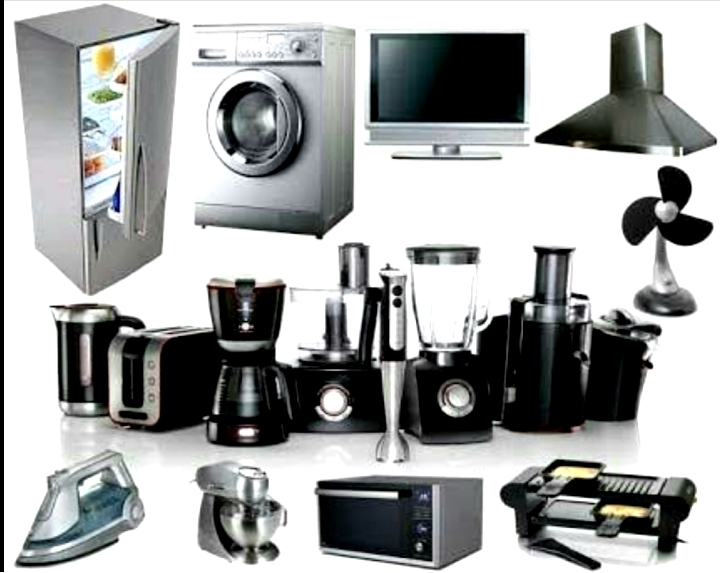

Household Appliances

Major appliances, also known as white goods, comprise major household appliances and may include: air conditioners, dishwashers, clothes dryers, drying cabinets, freezers, refrigerators, kitchen stoves, water heaters, washing machines, trash compactors, microwave ovens, and induction cookers.